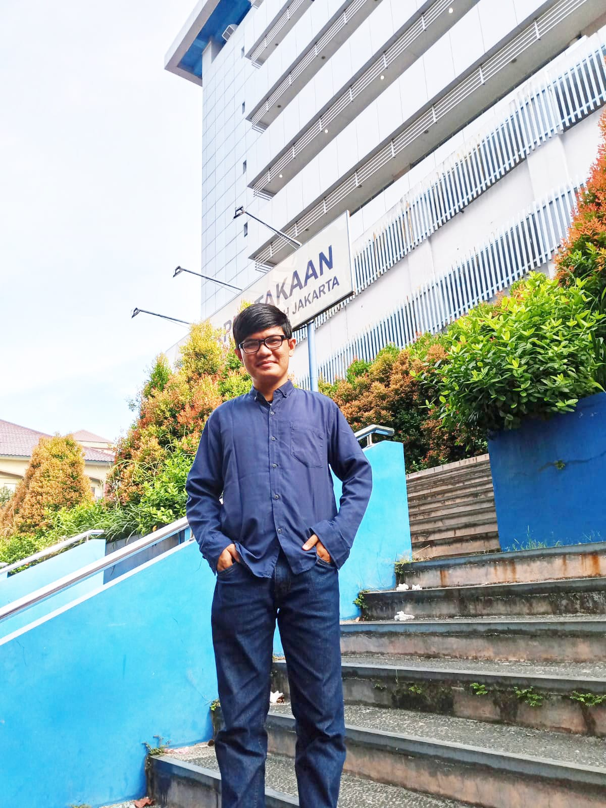

Taufiqul Hakim

Taufiqul Hakim, lahir di Bogor pada tahun 2001, adalah seorang pemikir muda yang tumbuh di tengah pesona keindahan alam dan kekayaan budaya kota tersebut. Dari Bogor yang hijau, ia membawa semangat dan keingintahuan yang mendalam ke dalam dunia filsafat.
Sejak usia dini, kepenasaran Taufiqul terhadap misteri kehidupan membawanya memasuki dunia filsafat. Bogor yang penuh dengan keindahan alamnya menjadi latar belakang inspiratif bagi pemikiran filosofisnya. Dengan mata yang melihat keaslian alam dan pikiran yang terbuka, Taufiqul merenungkan esensi keberadaan dan makna hidup.
Pertumbuhannya di Bogor memberinya kecintaan terhadap alam dan keinginan untuk memahami hubungan antara manusia dan lingkungannya. Kepekaannya terhadap keindahan alam sekitarnya menjadi inspirasi dalam menyelami pertanyaan-pertanyaan filosofis tentang kehidupan dan keberadaan manusia.
Ketertarikannya pada filsafat terus berkembang saat Taufiqul melangkah ke masa remaja dan kemudian memasuki kuliah di UIN Jakarta. Di kota tersebut, dia tidak hanya melanjutkan pencarian pengetahuannya tetapi juga berbagi gagasan dan pemikirannya dengan komunitas mahasiswa yang memiliki minat serupa.
Taufiqul Hakim, lahir di Bogor, adalah seorang filsuf muda yang membawa semangat intelektualnya dari keindahan alam Bogor ke dunia filsafat. Dengan akar yang kuat di tanah kelahirannya, ia terus menjelajahi makna kehidupan dan meninggalkan jejak inspiratif dalam pemikiran filosofisnya.
Pengertian Filsafat: Menyingkap Makna Keindahan Kebijaksanaan Manusia
Filsafat, yang berasal dari kata Yunani "philosophia," memiliki akar dalam hasrat manusia untuk merenung dan memahami secara mendalam hakikat kehidupan dan realitas sekitarnya. Sebagai suatu disiplin ilmu, filsafat bukan sekadar serangkaian argumen dan teori, tetapi juga sebuah perjalanan intelektual yang mengejar pemahaman yang lebih dalam mengenai tujuan hidup dan hakikat kebenaran.
Definisi Filsafat
Pengertian filsafat bisa dijelaskan sebagai suatu usaha sistematis untuk menjawab pertanyaan-pertanyaan mendasar tentang eksistensi, pengetahuan, moralitas, dan hakikat kehidupan. Dalam upayanya untuk memahami dan menjelaskan aspek-aspek kompleks ini, filsafat melibatkan refleksi, analisis kritis, dan pertanyaan-pertanyaan fundamental.
Tujuan Filsafat
- Pembangunan Kerangka Berpikir:
Filsafat bertujuan membantu individu membangun kerangka berpikir yang kritis dan analitis. Dengan cara ini, orang dapat mengembangkan kemampuan untuk merespons permasalahan dengan lebih baik dan lebih mendalam.
- Pencarian Kebenaran:
Salah satu tujuan utama filsafat adalah merangsang pencarian akan kebenaran. Ini mencakup upaya untuk memahami hakikat eksistensi, sumber pengetahuan, dan nilai-nilai moral yang mendasari tindakan manusia.
- Pengembangan Etika:
Filsafat membentuk landasan bagi pengembangan sistem nilai dan etika. Dengan merenungkan prinsip-prinsip moral, individu dapat mengenali dan memahami dasar-dasar tindakan mereka.
Metode Filsafat
Filsafat tidak hanya menawarkan jawaban, tetapi juga mengajukan pertanyaan-pertanyaan yang dapat merangsang pikiran. Metodenya melibatkan analisis konsep, pembangunan argumen, dan penggunaan logika sebagai alat untuk mengeksplorasi masalah-masalah filosofis.
Sejarah Filsafat
Sejarah filsafat mencakup perkembangan pemikiran manusia dari zaman kuno hingga era kontemporer. Mulai dari filsuf Yunani kuno seperti Sokrates, Plato, dan Aristoteles, hingga pemikir modern seperti Descartes, Locke, dan Kant, setiap periode mencerminkan pergulatan manusia dalam mencari makna dan kebijaksanaan.
Cabang-Cabang Filsafat
Filsafat terbagi menjadi berbagai cabang, masing-masing meneliti aspek-aspek tertentu dari kehidupan dan realitas:
- Epistemologi: Mempertanyakan sumber, natura, dan batasan pengetahuan manusia.
- Memeriksa konsep-konsep moral dan prinsip-prinsip yang mengatur perilaku manusia.
- Meneliti hakikat eksistensi, realitas, dan hubungan antara dunia fisik dan spiritual.
- Logika: Mempelajari prinsip-prinsip pemikiran yang benar dan metode penalaran yang valid.
Filsafat Kontemporer
Filsafat terus berkembang dan beradaptasi dengan perubahan zaman. Pemikiran eksistensialis, posmodernisme, dan analitik mencerminkan respons terhadap kompleksitas dunia modern dan tantangan filosofis yang baru.
Kesimpulan
Filsafat adalah perjalanan pikiran yang mendalam, mengajak individu untuk mengeksplorasi makna kehidupan, nilai-nilai, dan hakikat realitas. Dalam proses ini, filsafat memberikan kontribusi yang berharga dalam membentuk cara kita memahami diri sendiri dan dunia di sekitar kita. Melalui pengertian filsafat, manusia dapat merangkul kebijaksanaan sebagai seni yang indah dan mendalam.